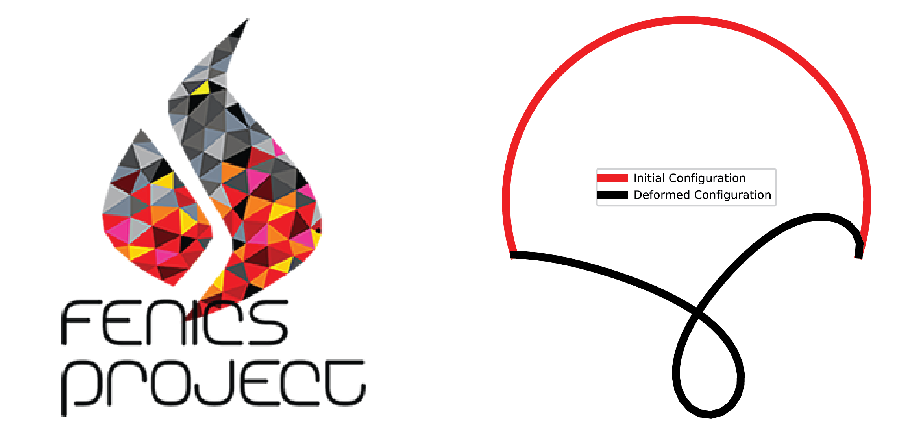

Fenics-arclength Documentation
Contents
Fenics-arclength Documentation#
fenics-arclength is a Python implementation of the arclength solver built on top of FEniCS. The arclength method, or the Riks method, is a method to generally used to solve solid mechanics problems with complex equilibrium paths. The library aims to keep the usage as similiar to FEniCS (version 2019.1.0) to allow for off-the-shelf usage.
{kind=link}
Usage#
Dependencies#
This package solely depends on FEniCS 2019.1.0. It is not tested on other packages. Instructions to install FEniCS (legacy) can be found here
Package Installation#
To use our arc-length solver, download and append this repository to the python path. This can be done by:
Add directory to
PYTHONPATH:
export PYTHONPATH <path/to/fenics_arclength>:$PYTHONPATH
Append directory to path in python script:
import sys
sys.path.append('path/to/fenics_arclength')
Theory#
The general idea of non-linear finite element analysis (FEA) is introduced here. We also briefly describe the implementation of arclength solvers in our package. We also provide an example on modifying the arc-length predictor scheme for geometrically exact beams.
Arc-Length solvers in this package#
Notebook Examples#
To execute the Jupyter Notebooks in this repository, please download the
repository and use the notebooks in the examples folder. Note that downloading
the notebook directly will not guarantee that the examples will run since the files will be
missing other components (i.e. meshes, other scripts).